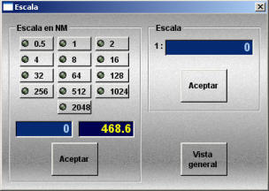

Menú Ver
El menú Ver consta de las siguientes opciones:
Estas regiones se muestran en la siguiente tabla:
| Región | Posición |
| AOR-W (Océano Atlántico Oeste) | 54.0º W |
| AOR-E (Océano Atlántico Este) | 15.5º W |
| IOR (Océano Índico) | 64.0º E |
| POR (Océano Pacífico) | 178.0º E |
Al desactivar la opción, las zonas de cobertura Inmarsat se ocultan.
- Automático: El sistema presenta siempre la carta de menor escala (de entre las incluidas en el ejercicio) que cubra el área de trabajo seleccionada en la Presentación Cartográfica.
- Inactivo: El sistema no comprueba si existe alguna carta de menor escala que cubra el área de trabajo seleccionada. Los cambios de carta deben realizarse a través de la opción Herramientas → Selección de Carta.
Nota: Esta opción no aparece cuando se usa cartografía C-Map.

Mientras esta opción esté seleccionada, el sistema presenta sobre la carta las ayudas gráficas para el cierre de la red de cerco o la recogida del palangre. Estas ayudas sólo se mostrarán si hay una maniobra de cerco o palangre en ejecución.

Estas ayudas muestran la siguiente información al operador:
- Iconos de boyas: Durante el largado, cada boya de la red que se lanza aparece representada como un círculo rojo. En el arte de cerco, cuando la posición del buque respecto a una boya es incorrecta para poder efectuar el cierre (ver manual de modelística), la boya se representa como un cuadrado con un aspa.
- Círculo centrado en el buque: Este círculo marca la distancia máxima entre el buque y la boya inicial para que se evalúe la posibilidad de cierre o recogida. La zona clara del círculo indica el sector de demoras (desde el buque a la boya inicial) válidas para que se pueda efectuar el cierre o recogida. La zona oscura indica el sector de demoras inválidas. Con este gráfico se puede ejecutar una maniobra de cierre o recogida correcta, siempre que el buque se sitúe, de manera que la boya inicial quede dentro de la zona clara del círculo. Para cerrar el cerco, también es necesario que todas las boyas queden dentro del sector marcado por la zona clara del círculo.
- Línea del buque a la boya inicial: Esta línea marca en cada momento la demora desde el centro del buque a la boya inicial. Esta línea debe cruzar la zona clara del círculo para que la maniobra de cierre o recogida sea correcta.
- Dato Vel. max.: Este dato muestra la velocidad máxima que puede llevar el buque para efectuar el cierre o recogida. El dato se presenta en rojo si la velocidad actual del buque es mayor que la máxima y en verde si la velocidad actual es menor o igual. Este dato debe estar verde para que la maniobra de cierre o recogida sea correcta.
- Dato Largada: Este dato muestra en cada momento la longitud de cable que se ha largado, así como los límites máximo y mínimo, entre los debe estar ésta longitud, para que se pueda efectuar el cierre. Cuando la longitud largada está dentro de los límites establecidos, este dato se presenta en color verde, en otro caso se presenta en rojo. Este dato sólo se presenta para la maniobra de cerco y debe estar verde para que el cierre sea correcto.
- Absoluto: La carta permanece fija en pantalla y los símbolos correspondientes a las unidades se mueven según su rumbo y velocidad.
- Relativo: La posición propia permanece fija en el centro de la pantalla y la carta se mueve manteniendo el norte hacia arriba.